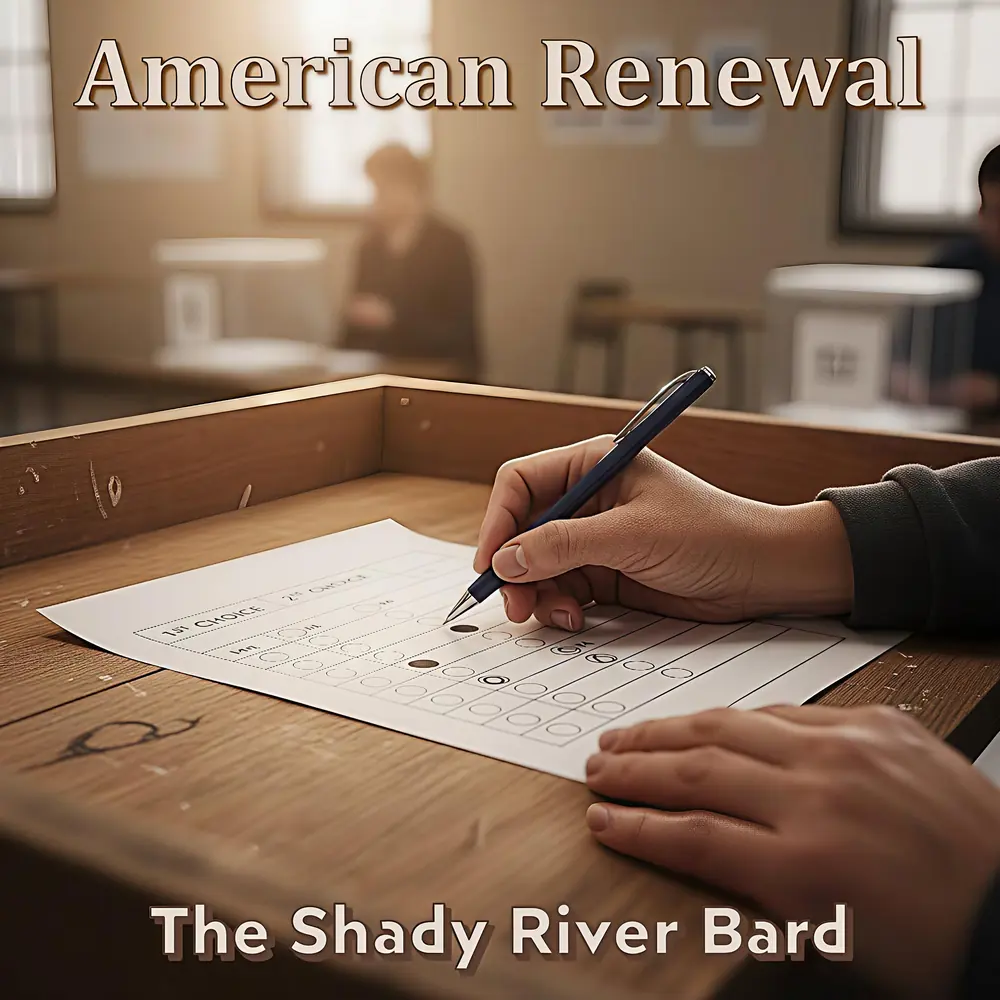

AMERICAN RENEWAL
A Blueprint for Systemic Reform, Democratic Health & Grassroots Restoration
“The American experiment was never meant to be a finished monument to be worshiped from afar; it is a working blueprint, a continuous, difficult, and sacred process of mending and building. Put down the torches. Pick up the tools.”
Conceived as the necessary answer to the diagnoses of fracture and decay in Divide and Conquer and the harrowing dystopian prognosis of American Rubble, this 19-song epic is a rigorous work of applied hope. It is a journey from the brink of collapse to the hard, necessary, and ultimately beautiful work of collective rebuilding.
Spanning two volumes and four acts, the album tackles external structures of captured power—revolving door lobbying, small-dollar public campaign matching, shareholder primacy, and worker representation—before turning inward to heal social isolation through third places, national service, media literacy, and structural constitutional renewal.
The Four Pillars of American Renewal
Table 0: A forensic diagnosis of institutional failure paired with concrete, pragmatic mechanisms for civic, economic, social, and structural restoration.
| Thematic Pillar | Core Causes | Key Manifestations | Dramatic Outcomes & Implications |
|---|
Source: American Renewal: An Album Concept • Democratic Institutional Analysis & Reform Policy Case Studies.
Two Volumes • Four Acts
From the external structures of corporate capture and labor liquidation, to the intimate repair of civic trust, community third places, and constitutional design.
19 Musical Movements
Select any movement to explore verified verbatim lyrics, musical arrangements, and The Bard's narrative genesis essays.